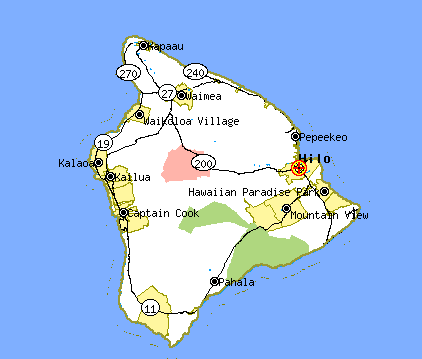

Hawaii February 2001

Hale Kai O'Kona

We stayed on the big island on the west ...the Kona...coast about one mile south of little town of Kailua on Alli'i Drive. In Hawai'i, houses have names and the name of our house was Hale Kai O'Kona. Sunset from our balcony was always suitable gaudy, like a Hawaiian print shirt. Out there, they look good.
Houses, having names, also have personalities. This is the gateway to a home 1 mile south of HKO'K on Ali'i.

Further south another 3 miles, just past Keauhou, where Ali'i Drive ends at a small park, the Makua comes down to greet the Makai.

Volcano National Park
Kilueau is an active volcano; which makes it exactly the kind of place I will visit on vacation. People die here on a semi-regular basis: fatal drops into the caldera, insta-broiled by lava flows, overcome by poisonous fumes, etc. A real family vacation spot.
For a longer description of my escapade, read
"Down Kilueau by Bicycle".

Wapiao Valley
In the NE of the island is the Wapiao valley. The valley floor is reached by falling down a cliff in a Chevy Suburban. I suggest not looking out the window on the ride down.
A photograph of the falls taken from horseback.

During our ride, the guide plucked Chinese grapefreuit the size of child's head from a tree and passed it out to our group for refreshment.